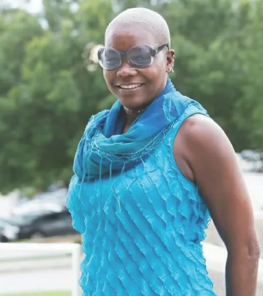
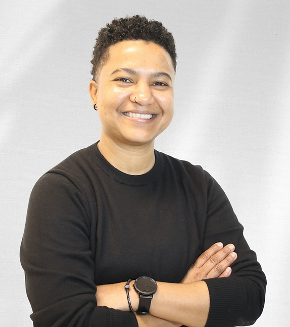
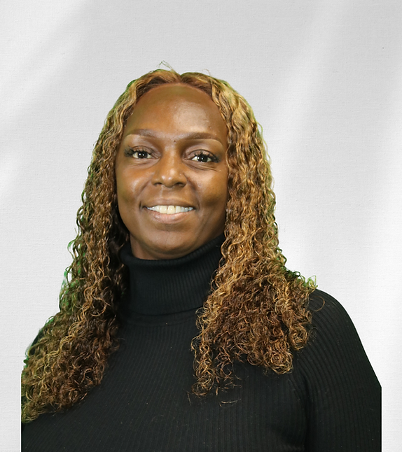
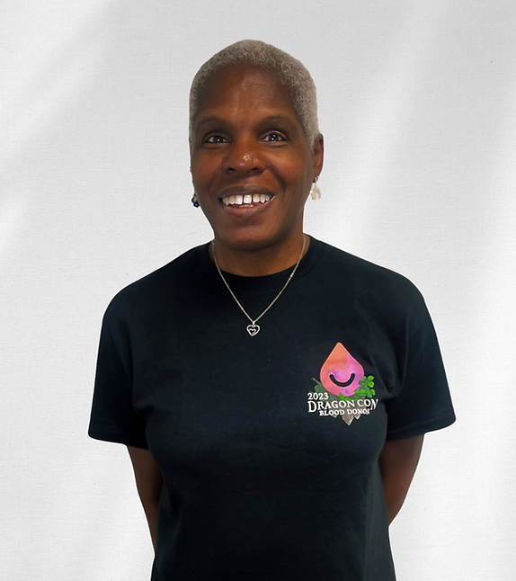
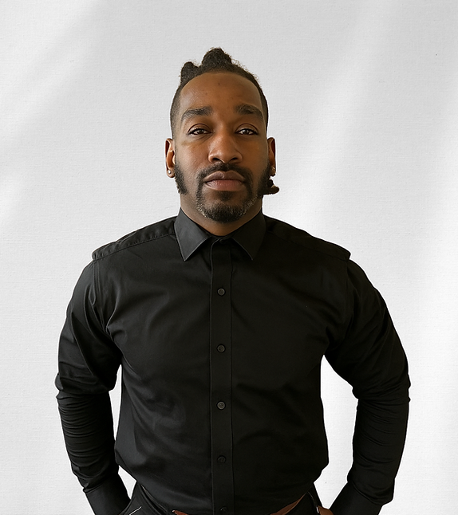

About Aniz, Inc.
Committed to emotional and physical wellness for Atlanta communities since 1996.
Mission
Aniz, Inc. is on a mission to promote emotional and physical wellness through mental and emotional support services and sexual health education to reduce risk behaviors in individuals affected by sexual health disparities.
Vision
Using a holistic approach with individuals to develop effective strategies that address issues impacting their overall quality of life.

Our History
The story of Aniz, Inc. begins in 1991, when founder Zina Age's godson was diagnosed with HIV. Searching for comprehensive support services for children affected by HIV/AIDS in the Metro Atlanta area, she found none existed.
As a graduate student at Clark Atlanta University School of Social Work, Zina interned at Outreach, Inc., where she witnessed children being sidelined during their parents' therapy sessions. This gap moved her to act. She created "We Want To Know" — a structured therapeutic program specifically for children ages 17 and under impacted by HIV/AIDS.
The program launched in late 1996 at Outreach, Inc. With the support of dedicated professionals and community advocates, Zina formalized the initiative and incorporated Aniz, Inc. as an independent nonprofit organization.
What began as a children's program has grown into a full-service holistic health and support agency addressing mental health, substance use, HIV prevention and care, and sexual health disparities across the Atlanta community.
Milestones
- 1991 — Founding inspiration: godson's HIV diagnosis
- 1996 — "We Want To Know" program launches at Outreach, Inc.
- 1996 — Aniz, Inc. incorporated as independent nonprofit
- 2015 — CEO receives Paula Crane Excellence in Addiction Treatment Award
- 2015 — Mayor's Phoenix Award from the City of Atlanta
- 2024 — Dr. Hardik Pipalia receives APHA Outstanding Practice in Public Health Ethics Award
Our Staff
Experienced, compassionate individuals devoted to top-quality support services for our community.

Kadi Paragan-Singh Senior Administrative Manager
Tyasia Henry Office Manager
Maxine Wright Finance Admin / Outreach
Antwan Sirmons Peer Support Specialist